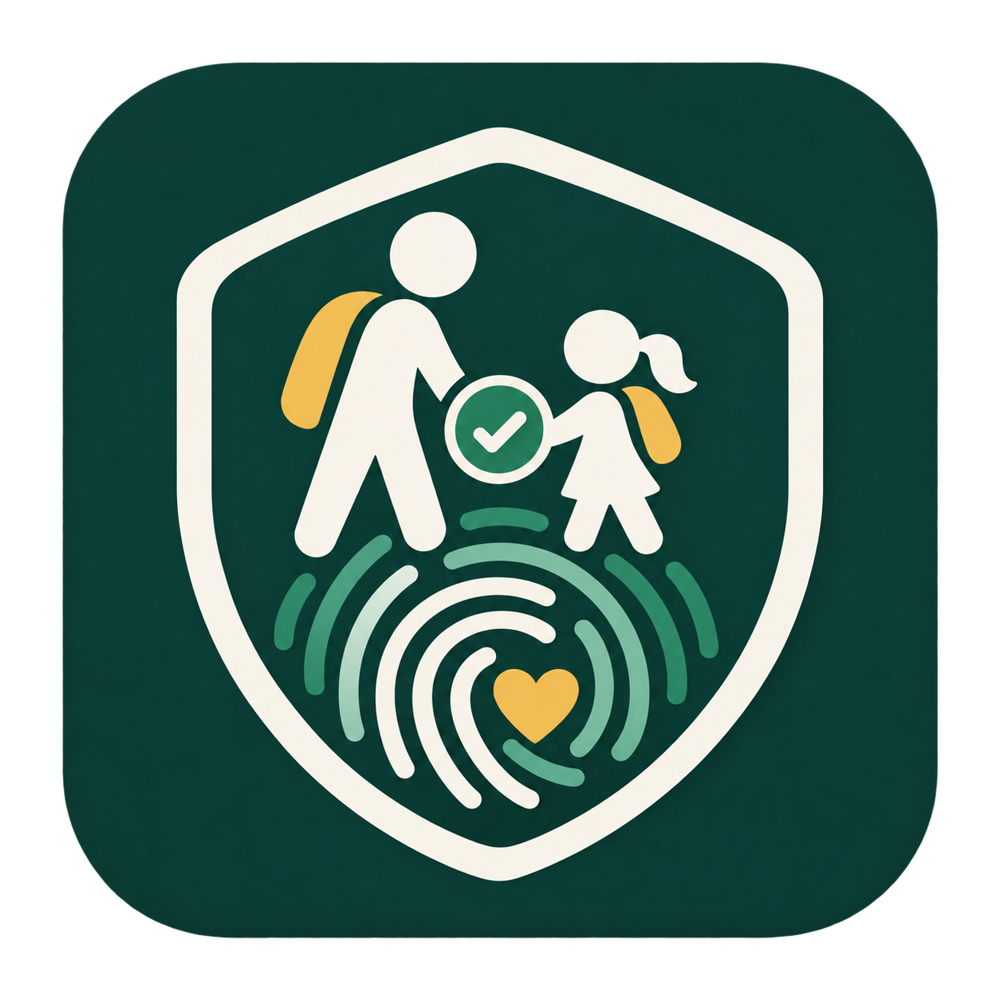

Controle simples e rastreável
- Cadastro de crianças, responsáveis e colaboradores
- Associação de vários responsáveis por criança
- Reconhecimento facial para validar a movimentação
- Histórico com criança, responsável, data e horário
- Uso em celular, tablet e computador
PWA desenvolvida com JavaScript, Supabase e PostgreSQL.